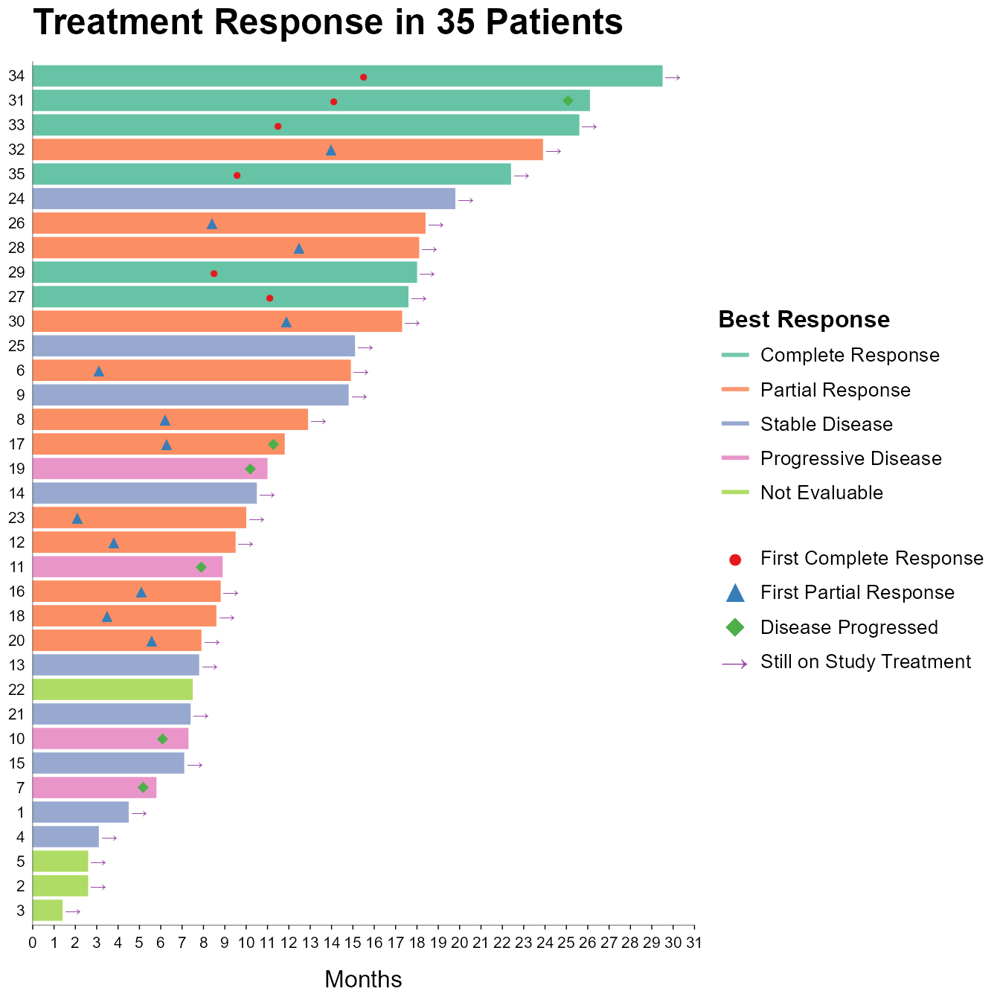
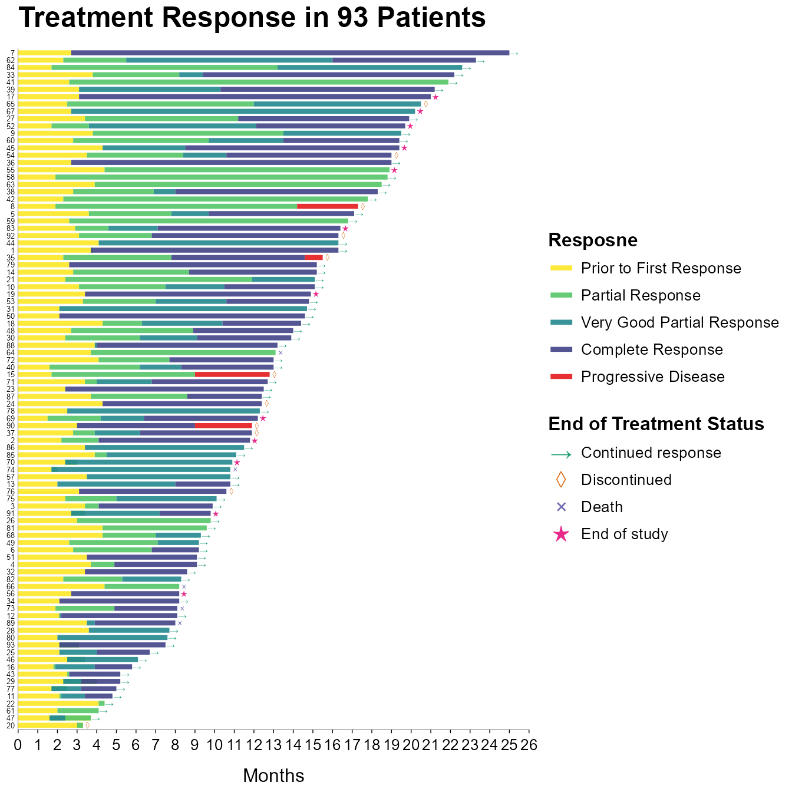

library(tidyverse)
library(ggswim)4 泳道图：让每位患者的治疗轨迹“被看见”
在临床研究中，我们习惯用缓解率、生存曲线来回答“试验药物有没有用”。这些指标反映的是群体层面的总体疗效，是确证性试验中权威的结局指标。
但在小样本探索性研究或真实世界研究中，情况往往不同：样本量有限，个体之间的差异可能很大，群体层面的指标未必能反映研究的全貌。这正是泳道图（Swimmer Plot）的优势所在：每一位患者对应一条时间泳道，将分散的随访记录串联起来，从而直观地呈现个体随时间变化的轨迹。
一张图，同时呈现每位患者的随访时长以及多个事件（如缓解、进展、是否持续治疗等）的发生时间。泳道图不是替代汇总的统计指标，而是补充缺失的关键信息，即个体异质性。
4.1 读懂泳道图
泳道图（Swimmer Plot）用于展示每位患者应答的类型及其持续时间1。图中，每一条水平泳道代表一位患者从入组（或治疗开始）起的随访时间跨度，不同的缓解状态（如CR、PR等）以不同颜色区分；水平时间轴通常以天、周或月为单位。终点事件或随访结束时的状态用特定符号标注，例如持续治疗以”⟶“（箭头）表示，死亡以”ד表示。
泳道图的价值是在个体层面将临床事件按时间顺序可视化，让每位患者的治疗轨迹“被看见”。
4.2 为什么使用ggswim绘制泳道图？
ggswim 是基于ggplot2原生扩展的泳道图专用绘图包。它采用图层化设计理念，支持多个治疗阶段的可视化，可以自由控制事件标记（marker）的形状，并且可以生成独立的图例，灵活性很高。
除 ggswim 外，绘制泳道图也可以选择swimplot包，但操作相对繁琐，图形的细节调整也比较受限；此外，还可以完全使用ggplot2基础函数绘图，但代码复杂度显著增加，一般不推荐。
4.3 泳道图实例
本文将通过两个实例展示如何绘制泳道图。
- 实例一以Best Response作为分组依据区分泳道的颜色，并在各泳道内添加关键事件标记，如首次获得部分缓解、疾病进展等1；
- 实例二则在泳道中分段展示患者不同治疗阶段的缓解情况，并在泳道末端标注患者末次随访时的状态，如持续治疗、中断、死亡等2。
加载必要的包：
4.3.1 实例一
本例用到的模拟数据如Table 4.1所示，其中patient是患者编号，trt_dur是治疗时长，best_res是最佳缓解，marker是标记事件，position是marker的位置。
| patient | trt_dur | best_res | marker | position |
|---|---|---|---|---|
| 3 | 1.4 | Not Evaluable | Still on Study Treatment | 1.9 |
| 2 | 2.6 | Not Evaluable | Still on Study Treatment | 3.1 |
| 5 | 2.6 | Not Evaluable | Still on Study Treatment | 3.1 |
| 4 | 3.1 | Stable Disease | Still on Study Treatment | 3.6 |
| 1 | 4.5 | Stable Disease | Still on Study Treatment | 5.0 |
| 7 | 5.8 | Progressive Disease | Disease Progressed | 5.2 |
| 15 | 7.1 | Stable Disease | Still on Study Treatment | 7.6 |
| 10 | 7.3 | Progressive Disease | Disease Progressed | 6.1 |
| 21 | 7.4 | Stable Disease | Still on Study Treatment | 7.9 |
| 22 | 7.5 | Not Evaluable | NA | NA |
绘图前我们需要对数据进行预处理，将patient、best_res和response转换为因子类型，并调整其水平（level）以控制泳道和图例的顺序。
df <- df |>
mutate(
patient = as_factor(patient) |> fct_reorder(trt_dur),
best_res = as_factor(best_res) |> fct_relevel("Complete Response", "Partial Response", "Stable Disease", "Progressive Disease", "Not Evaluable"),
marker = as_factor(marker) |> fct_relevel("First Complete Response", "First Partial Response", "Disease Progressed", "Still on Study Treatment")
)完成以上数据处理后即可绘图，生成的泳道图如Figure 4.1所示。
p <- ggplot() +
geom_swim_lane(
data = df,
aes(x = 0, xend = trt_dur, y = patient, color = best_res),
linewidth = 5,
alpha = 0.9
) +
geom_swim_marker(
data = df,
aes(x = position, y = patient, marker = marker),
size = 3
) +
scale_color_brewer(
name = "Best Response",
palette = "Set2",
guide = guide_legend(order = 1, override.aes = list(linewidth = 1))
) +
scale_marker_discrete(
name = NULL,
glyphs = c("\u25CF", "\u25B2", "\u25C6", "\u2192"),
colours = brewer.pal(4, "Set1"),
limits = c("First Complete Response", "First Partial Response", "Disease Progressed", "Still on Study Treatment"),
guide = guide_legend(override.aes = list(size = 5))
) +
scale_x_continuous(
breaks = seq(0, 31, 1),
limits = c(0, 31),
expand = expansion(mult = 0, add = 0)
) +
labs(
title = "Treatment Response in 35 Patients",
x = "Months",
y = NULL
) +
theme_ggswim(base_size = 8) +
theme(
plot.title = element_text(face = "bold"),
axis.title.x = element_text(face = "plain", size = 12),
axis.text = element_text(size = 8),
axis.ticks.x = element_line(linewidth = 0.25),
axis.ticks.y = element_blank(),
axis.ticks.length = unit(0.8, "mm"),
axis.line = element_line(linewidth = 0.1)
)
print(p)
4.3.2 实例二
本例用到的模拟数据如Table 4.2所示，其中patient是患者编号，start和end分别是患者每个治疗阶段的起止时间，trt_duration是治疗时长，end_of_trt_status是患者末次随访时的状态。
| patient | start | end | response | trt_duration | end_of_trt_status |
|---|---|---|---|---|---|
| 1 | 0.0 | 3.8 | Prior to First Response | 16.3 | Continued response |
| 1 | 3.8 | 3.7 | Partial Response | 16.3 | Continued response |
| 1 | 3.7 | 16.3 | Complete Response | 16.3 | Continued response |
| 2 | 0.0 | 2.2 | Prior to First Response | 11.8 | End of study |
| 2 | 2.2 | 4.1 | Partial Response | 11.8 | End of study |
| 2 | 4.1 | 11.8 | Complete Response | 11.8 | End of study |
| 3 | 0.0 | 3.4 | Prior to First Response | 9.9 | Continued response |
| 3 | 3.4 | 4.1 | Partial Response | 9.9 | Continued response |
| 3 | 4.1 | 9.9 | Complete Response | 9.9 | Continued response |
| 4 | 0.0 | 3.7 | Prior to First Response | 9.1 | Continued response |
同样我们先对数据进行预处理，将patient和response转换为因子类型并调整其水平（level），同时基于df构造df_marker，用于标注患者末次随访时的状态。
df <- df |>
mutate(
patient = as_factor(patient) |> fct_reorder(trt_duration),
response = fct_relevel(response, "Prior to First Response", "Partial Response", "Very Good Partial Response", "Complete Response", "Progressive Disease")
)
df_marker <- df |>
distinct(patient, trt_duration, end_of_trt_status) |>
rename(x = trt_duration, y = patient, marker = end_of_trt_status)运行以下代码后，最终生成的泳道图如Figure 4.2所示。
p <- ggplot() +
geom_swim_lane(
data = df,
aes(x = start, xend = end, y = patient, color = response),
linewidth = 1.5,
alpha = 0.9
) +
geom_swim_marker(
data = df_marker,
aes(x = x + 0.25, y = y, marker = marker),
size = 2
) +
scale_color_manual(
name = "Resposne",
values = c(viridisLite::viridis(4, begin = 0.2, direction = -1), brewer.pal(9, "Set1")[1]),
guide = guide_legend(order = 1, override.aes = list(linewidth = 1.5))
) +
scale_marker_discrete(
name = "End of Treatment Status",
glyphs = c("\u2192", "\u25CA", "\u00D7", "\u2605"),
colours = brewer.pal(4, "Dark2"),
limits = c("Continued response", "Discontinued", "Death", "End of study"),
guide = guide_legend(override.aes = list(size = 5))
) +
scale_x_continuous(
breaks = seq(0, 26, 1),
limits = c(0, 26),
expand = expansion(mult = 0, add = 0)
) +
labs(
title = "Treatment Response in 93 Patients",
x = "Months",
y = NULL
) +
theme_ggswim(base_size = 8) +
theme(
plot.title = element_text(face = "bold"),
axis.text.y.left = element_text(size = 5, margin = margin(r = 2)),
axis.title.x = element_text(face = "plain", size = 12),
axis.ticks.x = element_line(linewidth = 0.25),
axis.ticks.y = element_blank(),
axis.ticks.length = unit(0.8, "mm"),
axis.line = element_line(linewidth = 0.1)
)
print(p)
参考文献
1.
International Association for the Study of Lung Cancer (IASLC). What Do All Those Lines and Colors Mean — Interpreting Cancer Data Plots. https://education.iaslc.org/Listing/STARS-Webinar-What-Do-All-Those-Lines-and-Colors-Mean-Interpreting-Cancer-Data-Plots-4421 (2021).
2.
Moreau, P. et al. Teclistamab in relapsed or refractory multiple myeloma. N Engl J Med 387, 495–505 (2022).